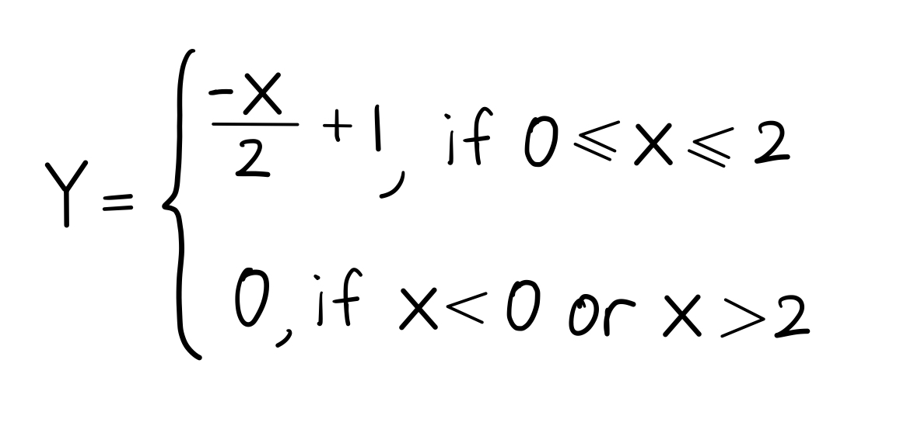

What is your risk of getting Covid?
Assumptions from research:
- Assumed that the ratio of inhaled germ particles is modeled by the linear equation Y = X⁄2 + 1, and will be below. According to thise model's assumption, a man exposed to a cough that is more than 2 meters away from himself is exposed to zero cough droplets from that cough (as negative droplets exposed is impossible).
- Assumed that wind speed in the immediate environment is close to zero. If the wind speed is more than zero, it could change the maximum transmissible distance of the coughed germ particles by providing them with a higher or lower initial velocity depending on the direction the wind is blowing (Pendar, 2020).
- Assumed that minimum droplets to get infected is equivalent to the average quantity of germ droplets for each cough released by an average person: 151550 droplets.
- Assumed that an average person coughs exactly once per minute.
- Best Case: 1 out of 10 people in your surroudings is infected.
- Worst Case: 5 out of 10 people in your surroudings is infected.
- Cloth Mask reduces inhaled germ particles by 15% (Cherrie, 2018).
- N95 Mask reduces inhaled germ particles by 95% (Cherrie, 2018).
Assumptions from real-life observations:
- For BTS, average distance between passengers is 1 meter, and every passenger has 10 other people that are each less than 2 meters away.
- For Taxi, average distance between passengers is 1 meter, and each passenger has 4 other people that are each less than 2 meters away.
- For Bus, average distance between passengers is 0.1 meters, and each passenger has 10 other people that are each less than 2 meters away.
- For Empty Mall, average distance between customers is 2 meters, and each customer has 2 other people that are each less than 2 meters away.
- For Busy Mall, average distance between customers is 0.5 meters, and each customer has 3 other people that are each less than 2 meters away.
- For Park, average distance between civilians is 5 meters, and each civilian has 1 person that is less than 2 meters away.
The following self-devised formula is a piecewise equation used to find the exposure index. The index ranges from 0 to 1, denoting the proportion of total cough droplets exposed:

- Where Y is exposure index
- X is the average distance from other people in the chosen location in meters
- X cannot be larger than 2 otherwise total droplets exposed will be negative
- X cannot be less than 0 because distance is a scalar quantity that is never negative
The following self-devised formula is used to calculate the total droplets exposed. Assumed a proportional relationship between D and S, L, Y, P, and an inversely proportional relationship between D and C :
Cherrie, J., Apsley, A., Cowie, H., Steinle, S., Mueller, W., Lin, C., Loh, M. (2018, June).
Effectiveness of face masks used to protect Beijing residents against particulate air
pollution. Retrieved July 25, 2020, from
https://www.ncbi.nlm.nih.gov/pmc/articles/PMC5969371/
Pendar, M., & Páscoa, J. (2020, August 01). Numerical modeling of the distribution of virus
carrying saliva droplets during sneeze and cough. Retrieved November 06, 2020, from
https://aip.scitation.org/doi/10.1063/5.0018432